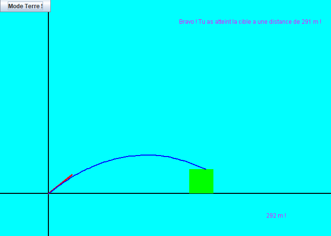

Balistics
A simple game using balistics



Gaming INSA Tournament's website
I developped the registration website to an academic e-sport tournament we organize.
3D Engine
A self-given challenge to develop a simple 3D engine.